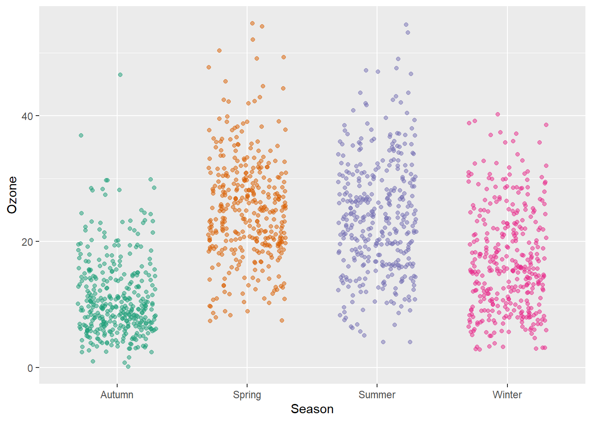
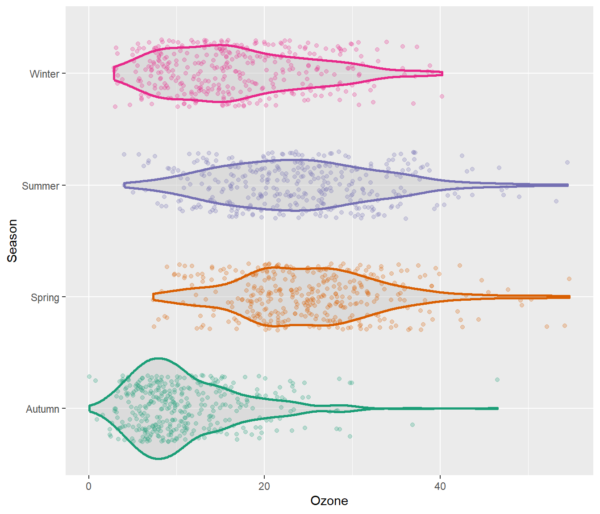
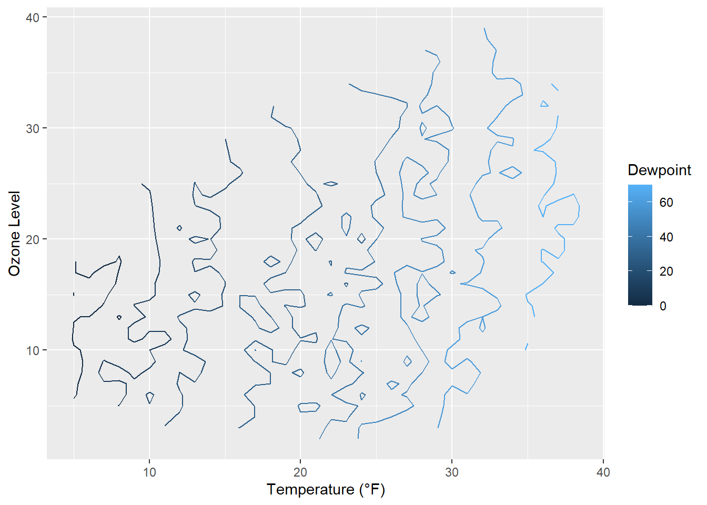

g <-
ggplot(chic, aes(x = season, y = o3,
color = season)) +
labs(x = "Season", y = "Ozone") +
scale_color_brewer(palette = "Dark2", guide = "none")
g + geom_boxplot()15 Working with Chart Types
15.1 Alternatives to a Box Plot
Box plots are great, but they can be so incredibly boring. Also, even if you are used to looking at box plots, remember there might be plenty people looking at your plot that have never seen a box and whisker plot before.
üíÅ Expand for a short recap on box and whiskers plots.
A box-and-whisker plot (sometimes called simply a box plot) is a histogram-like method of displaying data, invented by J. Tukey. The thick middle line notates the median, also known as quartile Q2. The limits of the box are determined by the lower and upper quartiles, Q1 and Q3. The box contains thus 50% of the data and is called “interquartile range” (IQR). The length of the whiskers is determined by the most extreme values that are not considered as outliers (i.e. values that are within 3/2 times the interquartile range).

There are alternatives, but first we are plotting a common box plot:
15.1.1 Alternative: Plot of Points
Let’s plot just each data point of the raw data:
g + geom_point()Not only boring but uninformative. To improve the plot, one could add transparency to deal with overplotting:
g + geom_point(alpha = .1)However, setting transparency is difficult here since either the overlap is still too high or the extreme values are not visible. Bad, so let’s try something else.
15.1.2 Alternative: Jitter the Points
Try adding a little jitter to the data. I like this for in-house visualization but be careful using jittering because you are purposely adding noise to your data and this can result in misinterpretation of your data.
g + geom_jitter(width = .3, alpha = .5)
15.1.3 Alternative: Violin Plots
Violin plots, similar to box plots except you are using a kernel density to show where you have the most data, are a useful visualization.
g + geom_violin(fill = "gray80", linewidth = 1, alpha = .5)15.1.4 Alternative: Combining Violin Plots with Jitter
We can of course combine both, estimated densities and the raw data points:
g + geom_violin(fill = "gray80", linewidth = 1, alpha = .5) +
geom_jitter(alpha = .25, width = .3) +
coord_flip()
The {ggforce} package provides so-called sina functions where the width of the jitter is controlled by the density distribution of the data—that makes the jittering a bit more visually appealing:
library(ggforce)
g + geom_violin(fill = "gray80", linewidth = 1, alpha = .5) +
geom_sina(alpha = .25) +
coord_flip()15.1.5 Alternative: Combining Violin Plots with Box Plots
To allow for easy estimation of quantiles, we can also add the box of the box plot inside the violins to indicate 25%-quartile, median and 75%-quartile:
g + geom_violin(aes(fill = season), linewidth = 1, alpha = .5) +
geom_boxplot(outlier.alpha = 0, coef = 0,
color = "gray40", width = .2) +
scale_fill_brewer(palette = "Dark2", guide = "none") +
coord_flip()15.2 Create a Rug Representation to a Plot
A rug represents the data of a single quantitative variable, displayed as marks along an axis. In most cases, it is used in addition to scatter plots or heatmaps to visualize the overall distribution of one or both of the variables:
ggplot(chic, aes(x = date, y = temp,
color = season)) +
geom_point(show.legend = FALSE) +
geom_rug(show.legend = FALSE) +
labs(x = "Year", y = "Temperature (°F)")ggplot(chic, aes(x = date, y = temp, color = season)) +
geom_point(show.legend = FALSE) +
geom_rug(sides = "r", alpha = .3, show.legend = FALSE) +
labs(x = "Year", y = "Temperature (°F)")15.3 Create a Correlation Matrix
There are several packages that allow to create correlation matrix plots, some also using the{ggplot2} infrastructure and thus returning ggplots. I am going to show you how to do this without extension packages.
First step is to create the correlation matrix. Here, we use the {corrr} package that works nicely with pipes but there are also many others out there. We are using Pearson because all the variables are fairly normally distributed (but you may consider Spearman if your variables follow a different pattern). Note that since a correlation matrix has redundant information we are setting half of it to NA.
corm <-
chic |>
dplyr::select(temp, dewpoint, pm10, o3) |>
corrr::correlate(diagonal = 1) |>
corrr::shave(upper = FALSE)Correlation computed with
• Method: 'pearson'
• Missing treated using: 'pairwise.complete.obs'library(gt)
corm %>% gt()| term | temp | dewpoint | pm10 | o3 |
|---|---|---|---|---|
| temp | 1 | 0.9577391 | 0.3679648 | 0.5349655 |
| dewpoint | NA | 1.0000000 | 0.3274569 | 0.4539134 |
| pm10 | NA | NA | 1.0000000 | 0.2060732 |
| o3 | NA | NA | NA | 1.0000000 |
Now we put the resulting matrix in long format using the pivot_longer() function from the {tidyr} package. We also directly format the labels and place empty quotes for the upper triangle. Note that I use sprintf() to ensure that the label always display two digits.
corm <- corm |>
tidyr::pivot_longer(
cols = -term,
names_to = "colname",
values_to = "corr"
) |>
dplyr::mutate(
rowname = forcats::fct_inorder(term),
colname = forcats::fct_inorder(colname),
label = dplyr::if_else(is.na(corr), "", sprintf("%1.2f", corr))
)| term | colname | corr | label | |
|---|---|---|---|---|
| temp | temp | temp | 1.0000000 | 1.00 |
| temp | temp | dewpoint | 0.9577391 | 0.96 |
| temp | temp | pm10 | 0.3679648 | 0.37 |
| temp | temp | o3 | 0.5349655 | 0.53 |
| dewpoint | dewpoint | temp | NA | |
| dewpoint | dewpoint | dewpoint | 1.0000000 | 1.00 |
| dewpoint | dewpoint | pm10 | 0.3274569 | 0.33 |
| dewpoint | dewpoint | o3 | 0.4539134 | 0.45 |
| pm10 | pm10 | temp | NA | |
| pm10 | pm10 | dewpoint | NA | |
| pm10 | pm10 | pm10 | 1.0000000 | 1.00 |
| pm10 | pm10 | o3 | 0.2060732 | 0.21 |
| o3 | o3 | temp | NA | |
| o3 | o3 | dewpoint | NA | |
| o3 | o3 | pm10 | NA | |
| o3 | o3 | o3 | 1.0000000 | 1.00 |
For the plot we will use geom_tile() for the heatmap and geom_text() for the labels:
ggplot(corm, aes(rowname, fct_rev(colname),
fill = corr)) +
geom_tile() +
geom_text(aes(label = label)) +
coord_fixed() +
labs(x = NULL, y = NULL)I like to have a diverging color palette—it is important that the scale is centered at zero correlation!—with white indicating missing data. Also I like to have no grid lines and padding around the heatmap as well as labels that are colored depending on the underlying fill:
ggplot(corm, aes(rowname, fct_rev(colname),
fill = corr)) +
geom_tile() +
geom_text(aes(
label = label,
color = abs(corr) < .75
)) +
coord_fixed(expand = FALSE) +
scale_color_manual(
values = c("white", "black"),
guide = "none"
) +
scale_fill_distiller(
palette = "PuOr", na.value = "white",
direction = 1, limits = c(-1, 1),
name = "Pearson\nCorrelation:"
) +
labs(x = NULL, y = NULL) +
theme(panel.border = element_rect(color = NA, fill = NA),
legend.position.inside = c(.85, .8))15.4 Create a Contour Plot
Contour plots are nice way to display eatesholds of values. One can use them to bin data, showing the density of observations:
ggplot(chic, aes(temp, o3)) +
geom_density_2d() +
labs(x = "Temperature (°F)", x = "Ozone Level")ggplot(chic, aes(temp, o3)) +
geom_density_2d_filled(show.legend = FALSE) +
coord_cartesian(expand = FALSE) +
labs(x = "Temperature (°F)", x = "Ozone Level")But now, we are plotting three-dimensional data. We are going to plot the thresholds in dewpoint (i.e. the temperature at which airborne water vapor will condense to form liquid dew) related to temperature and ozone levels:
## interpolate data
fld <- with(chic, akima::interp(x = temp, y = o3, z = dewpoint))
## prepare data in long format
df <- fld$z |>
tibble::as_tibble(.name_repair = "universal_quiet") |>
dplyr::mutate(x = dplyr::row_number()) |>
tidyr::pivot_longer(
cols = -x,
names_to = "y",
names_transform = as.integer,
values_to = "Dewpoint",
names_prefix = "...",
values_drop_na = TRUE
)
g <- ggplot(data = df, aes(x = x, y = y, z = Dewpoint)) +
labs(x = "Temperature (°F)", y = "Ozone Level",
color = "Dewpoint")
g + stat_contour(aes(color = after_stat(level)))
Surprise! As it is defined, the drew point is in most cases equal to the measured temperature.
The lines are indicating different levels of drew points, but this is not a pretty plot and also hard to read due to missing borders. Let’s try a tile plot using the viridis color palette to encode the dewpoint of each combination of ozone level and temperature:
g + geom_tile(aes(fill = Dewpoint)) +
scale_fill_viridis_c(option = "inferno")How does it look if we combine a contour plot and a tile plot to fill the area under the contour lines?
g + geom_tile(aes(fill = Dewpoint)) +
stat_contour(color = "white", linewidth = .7, bins = 5) +
scale_fill_viridis_c()15.5 Create a Heatmap of Counts
Similarly to our first contour maps, one can easily show the counts or densities of points binned to a hexagonal grid via geom_hex():
library(hexbin)
ggplot(chic, aes(temp, o3)) +
geom_hex() +
scale_fill_distiller(palette = "YlOrRd", direction = 1) +
labs(x = "Temperature (°F)", y = "Ozone Level")Often, white lines pop up in the resulting plot. One can fix that by mapping also color to either after_stat(count) (the default) or after_stat(density)…
ggplot(chic, aes(temp, o3)) +
geom_hex(aes(color = after_stat(count))) +
scale_fill_distiller(palette = "YlOrRd", direction = 1) +
scale_color_distiller(palette = "YlOrRd", direction = 1) +
labs(x = "Temperature (°F)", y = "Ozone Level")… or by setting the same color as outline for all hexagonal cells:
ggplot(chic, aes(temp, o3)) +
geom_hex(color = "grey") +
scale_fill_distiller(palette = "YlOrRd", direction = 1) +
labs(x = "Temperature (°F)", y = "Ozone Level")One can also change the default binning to in- or decrease the number of hexagonal cells:
ggplot(chic, aes(temp, o3, fill = after_stat(density))) +
geom_hex(bins = 50, color = "grey") +
scale_fill_distiller(palette = "YlOrRd", direction = 1) +
labs(x = "Temperature (°F)", y = "Ozone Level")If you want to have a regular grid, one can also use geom_bin2d() which summarizes the data to rectangular grid cells based on bins:
ggplot(chic, aes(temp, o3, fill = after_stat(density))) +
geom_bin2d(bins = 15, color = "grey") +
scale_fill_distiller(palette = "YlOrRd", direction = 1) +
labs(x = "Temperature (°F)", y = "Ozone Level")15.6 Create a Ridge Plot
Ridge(line) plots are a new type of plots which is very popular at the moment.
While you can create those plots with basic {ggplot2} commands the popularity lead to a package that make it easier create those plots: {ggridges}. We are going to use this package here.
library(ggridges)
ggplot(chic, aes(x = temp, y = factor(year))) +
geom_density_ridges(fill = "gray90") +
labs(x = "Temperature (°F)", y = "Year")Picking joint bandwidth of 5.23You can easily specify the overlap and the trailing tails by using the arguments rel_min_height and scale, respectively. The package also comes with its own theme (but I would prefer to build my own, see chapter “Create and Use Your Custom Theme”). Additionally, we change the colors based on year to make it more appealing.
ggplot(chic, aes(x = temp, y = factor(year), fill = year)) +
geom_density_ridges(alpha = .8, color = "white",
scale = 2.5, rel_min_height = .01) +
labs(x = "Temperature (°F)", y = "Year") +
guides(fill = "none") +
theme_ridges()Picking joint bandwidth of 5.23You can also get rid of the overlap using values below 1 for the scaling argument (but this somehow contradicts the idea of ridge plots…). Here is an example additionally using the viridis color gradient and the in-build theme:
ggplot(chic, aes(x = temp, y = season, fill = after_stat(x))) +
geom_density_ridges_gradient(scale = .9, gradient_lwd = .5,
color = "black") +
scale_fill_viridis_c(option = "plasma", name = "") +
labs(x = "Temperature (°F)", y = "Season") +
theme_ridges(font_family = "Roboto Condensed", grid = FALSE)Picking joint bandwidth of 2.99We can also compare several groups per ridgeline and coloring them according to their group. This follows the idea of Marc Belzunces.
library(dplyr)
## only plot extreme season using dplyr from the tidyverse
ggplot(data = dplyr::filter(chic, season %in% c("Summer", "Winter")),
aes(x = temp, y = year, fill = paste(year, season))) +
geom_density_ridges(alpha = .7, rel_min_height = .01,
color = "white", from = -5, to = 95) +
scale_fill_cyclical(breaks = c("1997 Summer", "1997 Winter"),
labels = c(`1997 Summer` = "Summer",
`1997 Winter` = "Winter"),
values = c("tomato", "dodgerblue"),
name = "Season:", guide = "legend") +
theme_ridges(grid = FALSE) +
labs(x = "Temperature (°F)", y = "Year")Picking joint bandwidth of 3.17The {ggridges} package is also helpful to create histograms for different groups using stat = "binline" in the geom_density_ridges() command:
ggplot(chic, aes(x = temp, y = factor(year), fill = year)) +
geom_density_ridges(stat = "binline", bins = 25, scale = .9,
draw_baseline = FALSE, show.legend = FALSE) +
theme_minimal() +
labs(x = "Temperature (°F)", y = "Season")